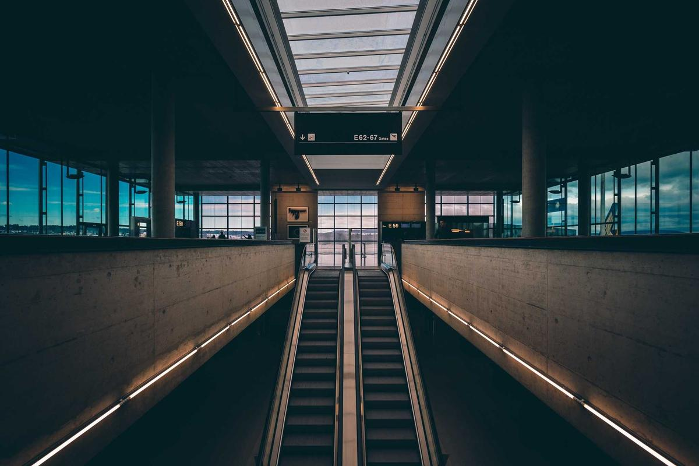
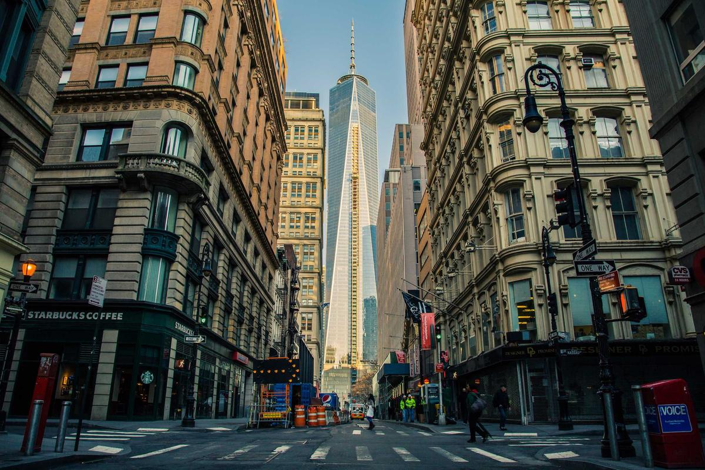
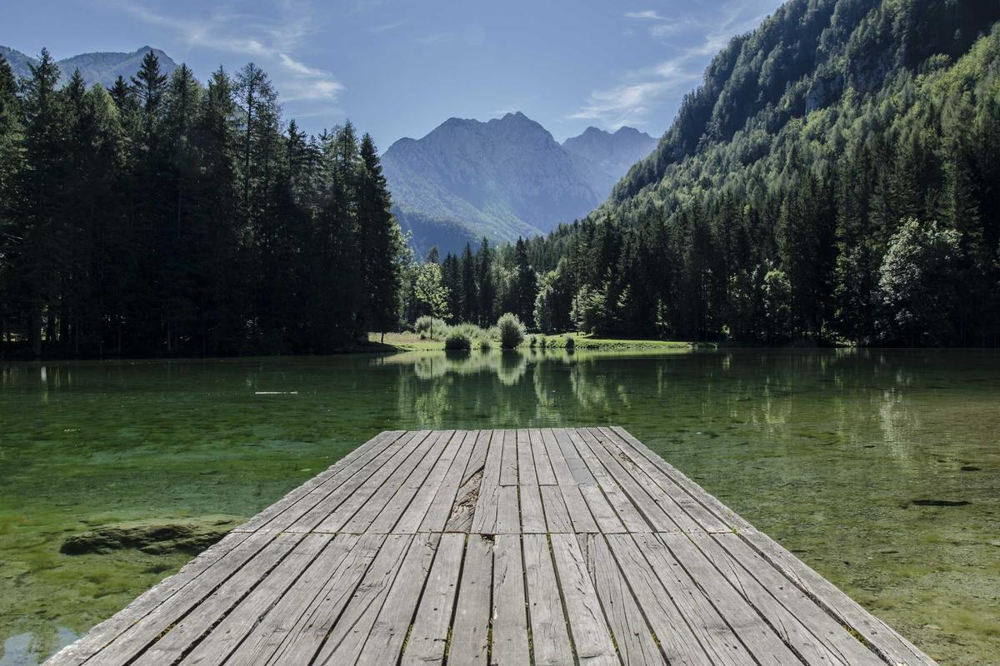
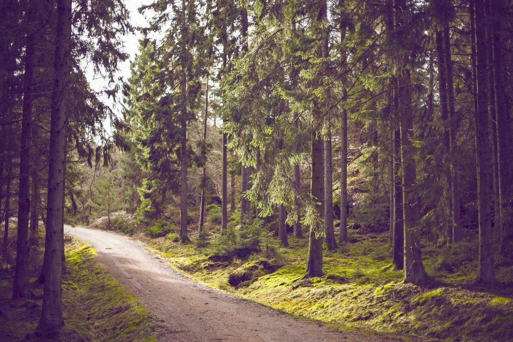
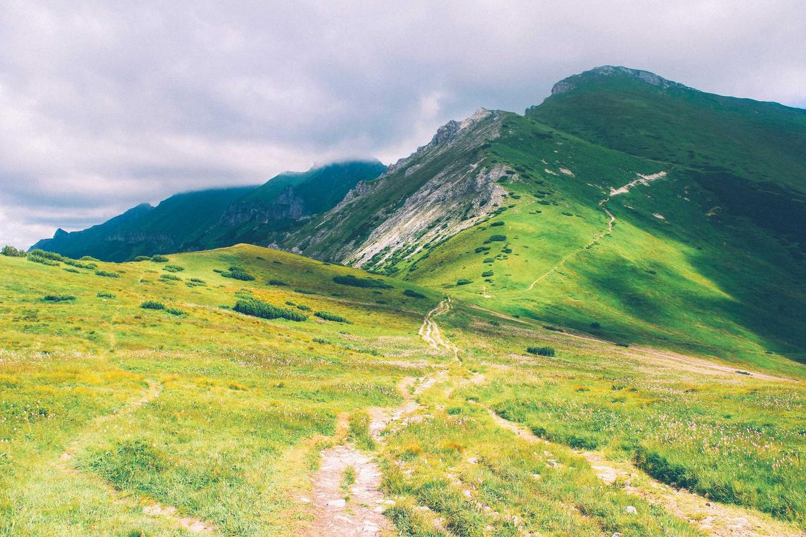

Guide de Pêche à la Mouche en Île de la Réunion, Verdon et Alpes
Vivez une expérience unique au cœur de la nature avec Kévin Chambon. Des cours d'eau cristallins de la Réunion aux torrents sauvages des Alpes, laissez-vous guider par la passion et l'expertise.
Passionné depuis l'enfance par les rivières et la nature, Kévin Chambon vous accompagne pour une reconnexion profonde à la nature à travers la pêche à la mouche. Diplômé et certifié, il partage son savoir avec bienveillance et passion, que vous soyez débutant ou pêcheur confirmé.
Explorez les plus beaux cours d'eau et lacs des Alpes, de la Réunion et de la Guadeloupe avec un guide qui connaît chaque recoin de ces territoires sauvages. Chaque sortie devient une aventure humaine autant que sportive.
Du volcan de la Réunion aux gorges du Verdon, chaque destination offre une expérience unique de pêche à la mouche dans des cadres naturels préservés.

Océan Indien
Île de la Réunion
Rivières tropicales uniques, eaux cristallines entre forêt primaire et cascades volcaniques.

Provence · Alpes
Gorges du Verdon
Le Grand Canyon européen, avec ses eaux turquoise et ses truites sauvages légendaires.

Haute Montagne
Les Alpes
Torrents glaciaires, lacs d'altitude et alpages : la pêche à la mouche dans toute sa splendeur alpine.
Aventure & Nature
Nos Expériences
Partez à l'aventure avec des itinérances, randonnées, packrafts et expéditions pour découvrir des milieux exceptionnels et pratiquer la pêche à la mouche dans des paysages uniques.

Itinérance
Aventures Itinérantes en Alpes
Traversez des massifs sauvages, dormez sous les étoiles et pêchez des eaux encore vierges. Des expéditions multi-jours conçues pour les esprits aventuriers en quête d'absolu.
2 à 7 jours
1 à 6 personnes
Intermédiaire

Packraft & Pêche
Descente en Packraft, Île de la Réunion
Associez l'adrénaline du packraft aux joies de la pêche à la mouche sur les rivières tropicales de la Réunion. Une expérience unique entre eau vive et nature préservée.
1 journée
2 à 4 personnes
Tous niveaux
Expédition
Expédition Gorges du Verdon
Immersion totale dans les gorges du Verdon, joyau de Provence. Pêchez les truites sauvages au pied des falaises calcaires dans l'un des sites naturels les plus spectaculaires d'Europe.
3 à 5 jours
1 à 8 personnes
Débutant à expert
Randonnée Pêche
Lacs d'Altitude des Alpes
Randonnée jusqu'aux lacs d'altitude pour pêcher des ombles arctiques dans un silence absolu. Le sommet du dépaysement pour les pêcheurs en quête de solitude et de beauté sauvage.
De l'initiation au perfectionnement, bénéficiez de formations adaptées à votre niveau pour maîtriser les techniques de pêche à la mouche dans différents environnements. Kévin transmet sa passion avec pédagogie et bienveillance.
Que vous souhaitiez apprendre à lancer votre première mouche ou perfectionner vos techniques en eaux rapides, chaque prestation est personnalisée pour répondre à vos attentes et vous faire progresser dans les meilleures conditions.
Découvrez pour la première fois la magie de la pêche à la mouche. Apprentissage du lancer, choix des mouches et lecture des rivières. Dès 8 ans, aucun matériel nécessaire.
Journée de Pêche Guidée
Une journée complète en rivière avec Kévin. Encadrement personnalisé, spots secrets, conseils techniques et partage d'une passion commune dans des paysages magnifiques.
Stage de Perfectionnement
Pour les pêcheurs expérimentés souhaitant aller plus loin. Techniques avancées de lancer, entomologie, lecture fine des courants et adaptation aux conditions difficiles.
Séjour en Groupe
Organisation complète de séjours pêche pour groupes d'amis, séminaires ou associations. Programme sur mesure, hébergement, repas et encadrement tout inclus.
Week-end Famille & Nature
Un weekend pensé pour partager la passion de la rivière en famille. Activités adaptées aux enfants, initiation douce et moments inoubliables dans un cadre naturel préservé.
Expédition Sauvage
Pour les aventuriers confirmés : expéditions de plusieurs jours en milieux reculés, pêche en eaux vierges avec bivouac et immersion totale dans les territoires les plus sauvages.
Prêt à vivre votre aventure ?
Contactez Kévin pour discuter de votre projet et créer une expérience unique, personnalisée selon vos envies et votre niveau.
Pour toute demande ou réservation, contactez Kévin Chambon, Moniteur-Guide de Pêche, disponible en Alpes, Île de la Réunion et Guadeloupe. Chaque projet est unique, n'hésitez pas à lui en parler !
Emailcontact@les-sens-de-la-riviere.com
Téléphone+33 (0)6 XX XX XX XX
Zones d'interventionAlpes françaises · Île de la Réunion · Guadeloupe